Лесные хроники · Досье странника
Геллерт
Карн’Вэйн
«Быть достойным — не то же самое, что казаться достойным»
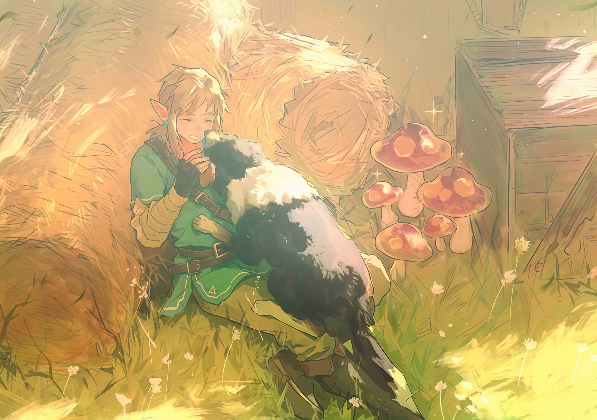
Портрет · I
Внешность
«Есть в нём нечто от утреннего света, пробивающегося сквозь кроны древнего леса, — холодного, почти бесплотного, но всё же несущего в себе обещание нового дня»
- Рост
- 165 см
- Вес
- 58 кг
Светлые волосы Геллерта отливают золотом, словно в них задержалось утреннее солнце. Непослушные пряди обрамляют лицо и падают на лоб, придавая ему естественную, чуть небрежную лёгкость. Заострённые уши выдают эльфийское происхождение, а ясные небесно-голубые глаза напоминают лесное озеро, ещё не потревоженное ветром.
На светлой коже особенно заметны родовые рисунки Карн’Вэйнов. Их узоры похожи на тонкие корни: в них живут память семьи, древние обеты и связь с предками. Но тяжесть наследия не подавляет юношеской живости Геллерта — рядом со старинными знаками она кажется весенним побегом на стволе векового дерева.
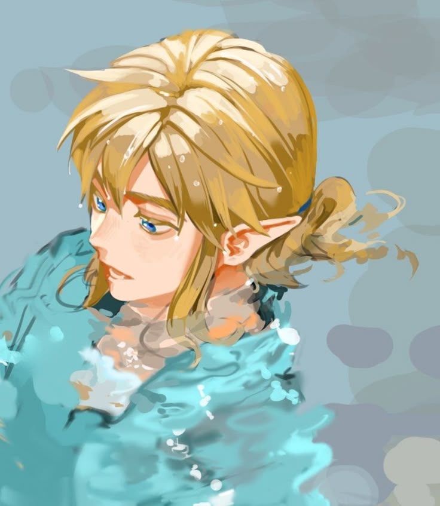
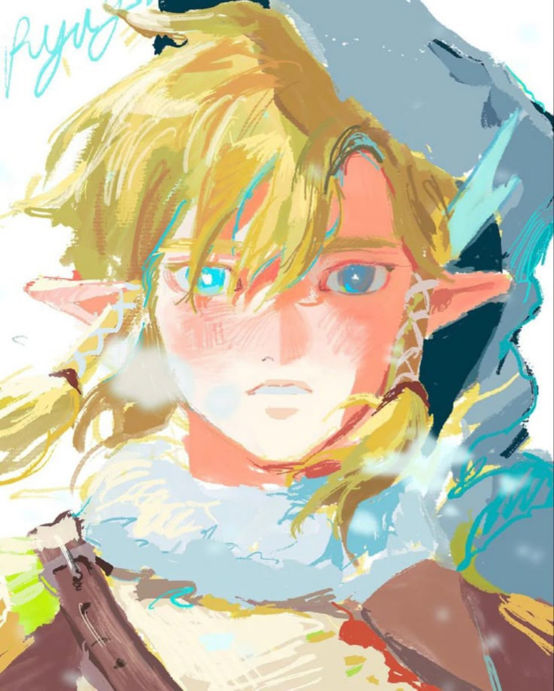
В его одежде зелень листвы соседствует с лазурью неба. Ремни, наручи и дорожное снаряжение выдают привычку прокладывать собственные тропы, не лишая облик изящества. В Геллерте нет холодной недосягаемости древних эльфийских родов: его красота живая и подвижная, словно солнечный свет, скользящий по траве.
Наследие рода и природная лёгкость существуют в нём рядом, как могучий ствол и молодые побеги. Геллерт напоминает ручей под древними деревьями: отражает их вековую мудрость, но остаётся свободным и подвижным. Старое и новое так тесно сплелись в его облике, что отделить одно от другого уже невозможно.
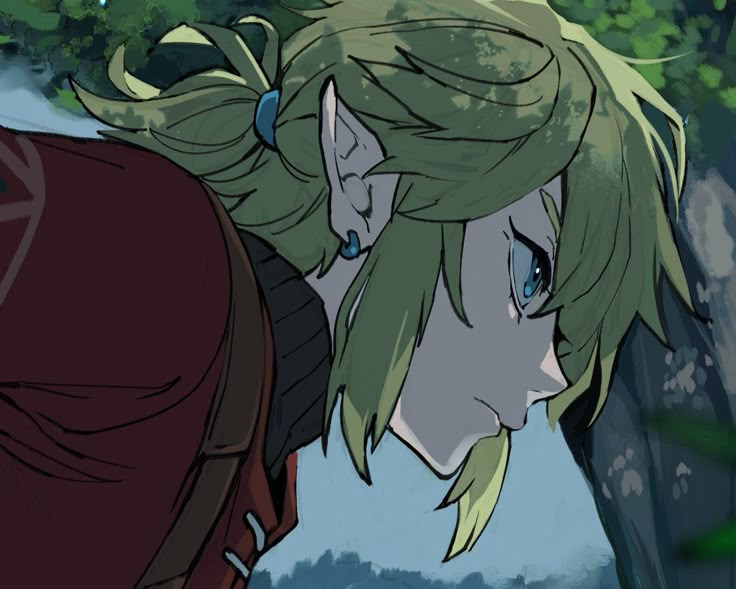
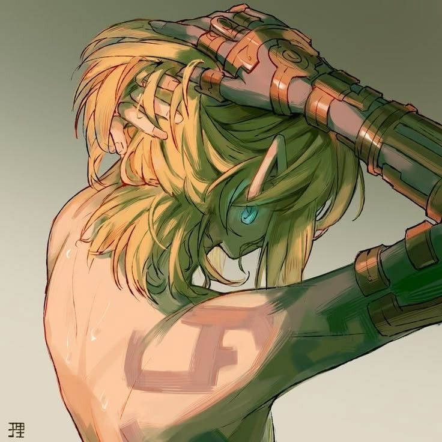
Внутренний портрет · II
Характер
«Удивительно, насколько долго может гореть огонь, если его обладатель ещё не научился бояться темноты. Ещё удивительнее, что некоторые души, кажется, вовсе не считают темноту чем-то, чего следует бояться»
Геллерт хранит редкую открытость миру: за каждым поворотом тропы он ждёт встречи или истории, ради которой стоило отправиться в путь. Это не слепая наивность, а привычка искать хорошее даже там, где другие давно разочаровались. Порой такая вера подводит его, но расставаться с ней он не собирается.
В разговоре он жив и выразителен: легко увлекается, перескакивает с мысли на мысль и задаёт бесконечные вопросы. Ему хочется понять, как устроен мир и что скрывается за чужими словами. Иногда любопытство делает его слишком прямым, однако за неловкими расспросами стоит искренний интерес к собеседнику.
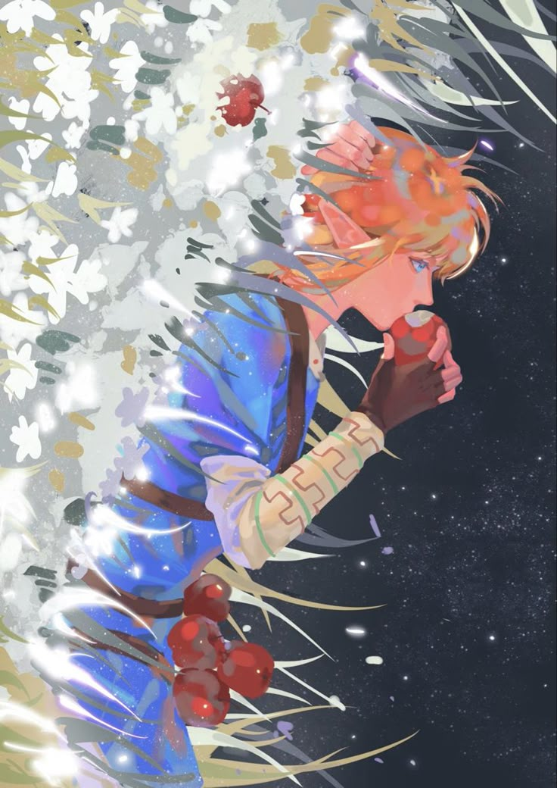
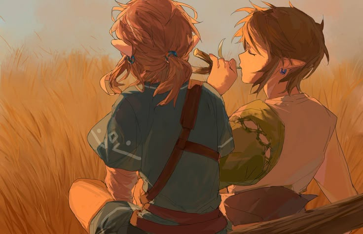
Чужая беда редко оставляет его в стороне. Геллерт спешит помочь раньше, чем успевает оценить последствия, бывает упрям и вспыльчив, а собственную правоту защищает слишком настойчиво. Он не всегда замечает чужую усталость, но движет им простое убеждение: если можешь что-то изменить, нельзя делать вид, что ничего не случилось.
Новизна влечёт его сильнее покоя. Он не любит однообразия и ответов «так принято», предпочитая пробовать, ошибаться и начинать снова. Увлечённость порой оборачивается безрассудством: в погоне за результатом он недооценивает трудности. Но именно это беспокойство не даёт ему застыть в чужих представлениях о себе.
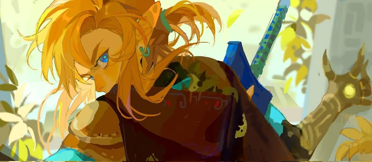
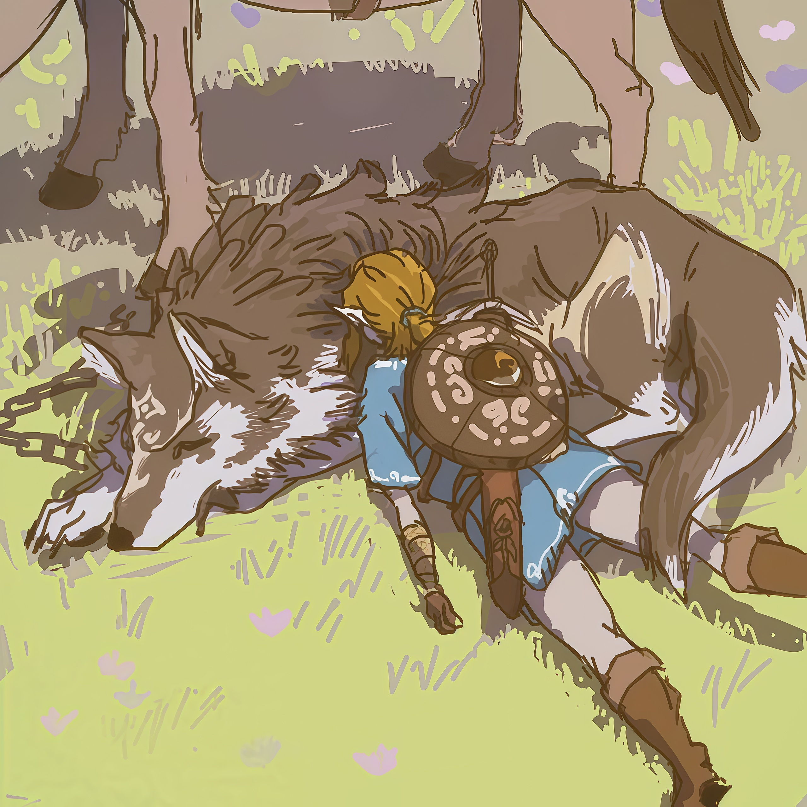
На высокомерие Геллерт отвечает колкостью и остро переживает, когда его считают слабым из-за возраста. Рядом с другим воспитанником Даэнорта особенно заметен его дух соперничества: за уязвлённой гордостью скрывается желание доказать самому себе, что он способен на большее.
Ему ещё предстоит научиться отличать смелость от поспешности, а помощь — от вмешательства. Но Геллерт хочет стать достойным по собственному выбору, а не ради фамилии или похвалы наставника. Даже когда не хватает терпения и верных слов, он старается не погаснуть.
Память рода · III
Биография
«Наследник Карн’Вэйн — звучит громко. Особенно если не принимать во внимание, что в его распоряжении остались лишь корни, пни, бесчисленные деревья да чудовища, скрывающиеся в дебрях Запретного Леса. Впрочем, история знала наследников и с куда более скромными владениями, хотя далеко не каждый из них умудрялся унаследовать столько чужой ненависти»
Геллерт родился после изгнания Карн’Вэйнов из Зеленолесья. Утраченная родина жила для него лишь в рассказах старших — горьких, полных обид и воспоминаний о прежнем величии. Изгнание не осталось в прошлом: его тень ложилась на семейные разговоры и надежды, которые связывали с каждым новым поколением.
С детства ему внушали: фамилия обязывает вернуть роду достоинство. Но ребёнку было трудно ненавидеть земли, которых он не видел, и людей, знакомых лишь по чужим словам. Геллерт чувствовал тяжесть семейной обиды, однако не мог принять её за единственную правду о мире. Между долгом и собственным взглядом росло противоречие.
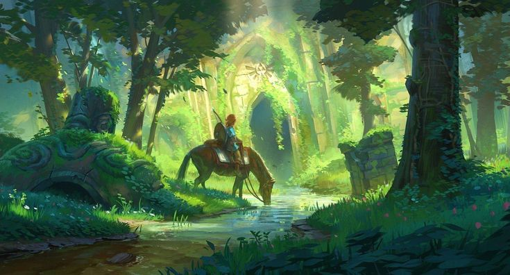
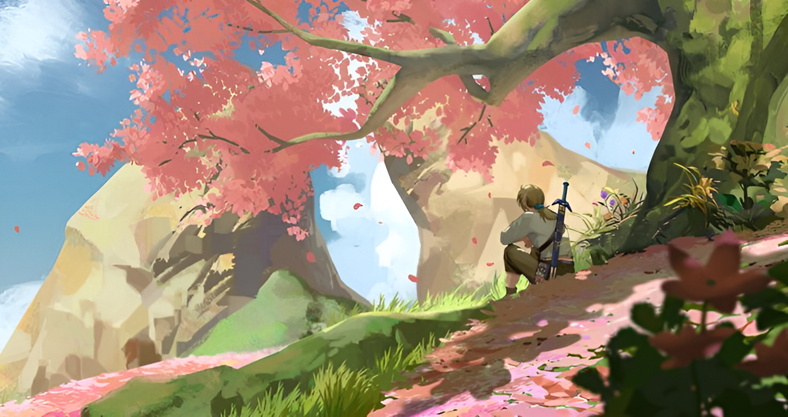
Ночь, изменившая его жизнь, запомнилась вспышками: тревожным шумом, огнём и запахом дыма. Дом и семья перестали быть защитой, а приготовленное для него будущее рассыпалось вместе с прежним порядком. Потеря оставила рану и разрушила детскую уверенность в том, что старшие всегда знают, как устроен мир.
После утраты его путь привёл к Даэнорту Карн’Вэйну. В родственнике Геллерт обрёл кров, направление и опору. Его восхищали сила наставника, решительность и способность выдерживать удары судьбы. Даэнорт стал для него примером того, каким может быть Карн’Вэйн, если не позволит прошлому определить всю свою жизнь.
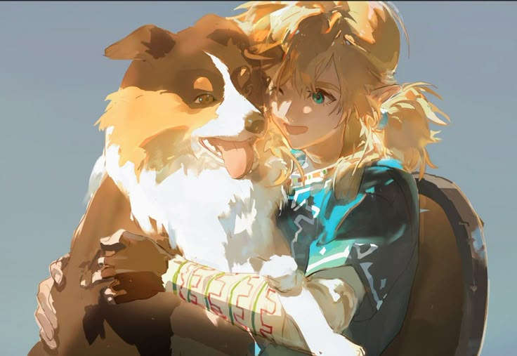
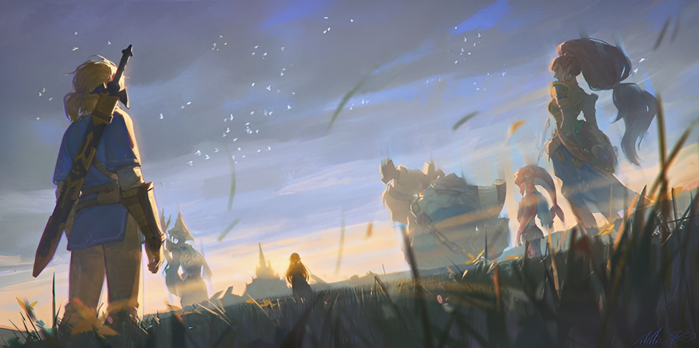
Ученичество требовало дисциплины и терпения. Вместо быстрого признания Геллерта ждали испытания, ошибки и новые попытки. Суровость Даэнорта порой казалась несправедливой, но постепенно он понимал: одного восхищения мало, чтобы пройти путь наставника. Собственную силу придётся вырастить самому.
Между памятью рода, болью утраты и уроками наставника складывается его собственный путь. Геллерт ещё не знает, что значит быть Карн’Вэйном и как хранить верность корням, не позволяя им удерживать себя. Но он продолжает идти, веря, что жизнь всё ещё заслуживает доверия.